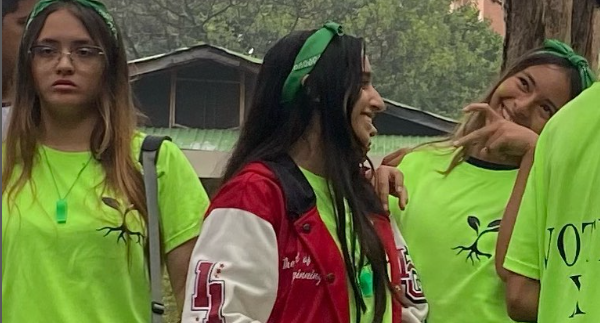
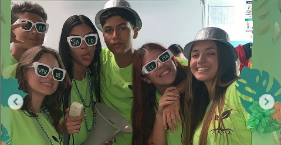
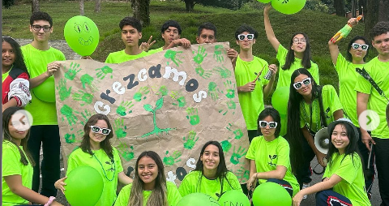
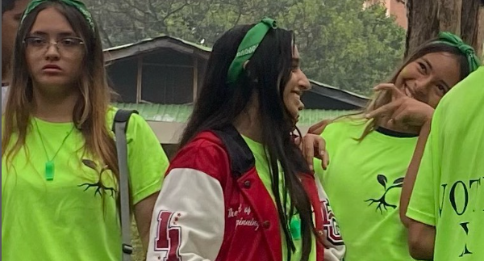
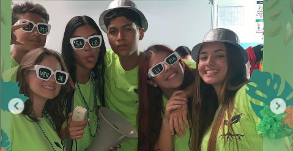
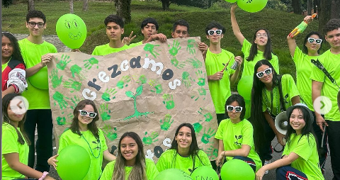

IHAP
Plataforma Web Sistematizada Que Permite La Contabilidad De Votos
Plataforma Web Sistematizada Que Permite La Contabilidad De Votos
Información de las campañas y candidatas
Equipo verde
¡Un Mejor Futuro para Nuestra Escuela!
Queridos compañeros y compañeras
Hoy nos encontramos aquí con un objetivo claro y un sueño compartido: transformar nuestra escuela en un lugar aún mejor. Sabemos que juntos podemos lograrlo, y es por eso que presentamos nuestras propuestas para una campaña estudiantil enfocada en la mejora de nuestro querido colegio.
 





¡Hola a todos!
Hoy me dirijo a ustedes como candidato para la personería de nuestro querido instituto. Estoy aquí para representar y luchar por los derechos e intereses de todos los estudiantes.
En primer lugar, quiero decirles que mi principal objetivo es promover un ambiente de respeto, inclusión y equidad. Quiero que cada estudiante se sienta valorado y escuchado, sin importar su origen, género o capacidad. Todos merecemos ser tratados con dignidad y tener igualdad de oportunidades.
Además, me comprometo a trabajar en estrecha colaboración con la administración escolar para mejorar nuestras instalaciones y recursos. Quiero asegurarme de que tengamos las herramientas necesarias para alcanzar nuestro máximo potencial académico y personal.
También me gustaría fomentar la participación estudiantil y fortalecer los lazos entre nosotros. Organizaré eventos culturales, deportivos y sociales para que podamos disfrutar juntos y construir una comunidad sólida.
ATT:Salome Lopera
Equipo amarillo
¡Un Mejor Futuro para Nuestra Escuela!
Queridos compañeros y compañeras
Hoy nos encontramos aquí con un objetivo claro y un sueño compartido: transformar nuestra escuela en un lugar aún mejor. Sabemos que juntos podemos lograrlo, y es por eso que presentamos nuestras propuestas para una campaña estudiantil enfocada en la mejora de nuestro querido colegio.
Queridos amigos y amigas
Hoy me dirijo a ustedes con humildad y entusiasmo para presentarme como candidato a la personería de nuestro querido instituto. Es un honor tener la oportunidad de representarlos y trabajar en pro de nuestros derechos, necesidades y sueños.
En primer lugar, quiero decirles que entiendo las responsabilidades que conlleva este cargo. Como personero o personera, mi compromiso será velar por los intereses de todos los estudiantes, escuchar sus inquietudes y ser su voz en las decisiones que se tomen en nuestra institución.
Mi visión para nuestro instituto es crear un ambiente inclusivo y respetuoso, donde cada estudiante se sienta valorado y escuchado. Quiero promover espacios de diálogo y participación, donde podamos expresar nuestras ideas, sugerencias y preocupaciones.
ATT:Michelle Andrade